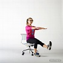
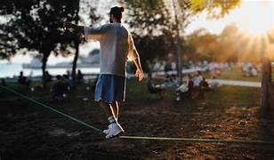
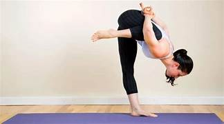
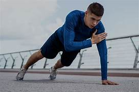
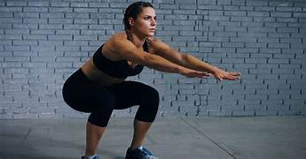

Stand on one leg and try to maintain your balance. This exercise strengthens your core and improves stability.
Walk in a straight line placing one foot directly in front of the other, as if walking on a tightrope. This enhances coordination and balance.
Hold one leg up and stretch your arms to the side for balance. A great exercise to improve single-leg stability.
In a plank position, alternate tapping your shoulders with your opposite hand while keeping your core stable.
Perform squats on a narrow surface like a balance beam or a sturdy ledge to challenge your equilibrium.
